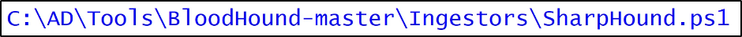
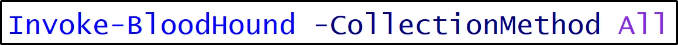
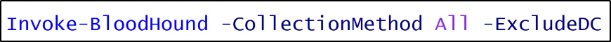

Bloodhound
https://github.com/BloodHoundAD/BloodHound
Provvede un interfaccia GUI per gli elementi AD collezionati,
in modo da rappresentare elementi e relazioni
Utilizza la Teoria dei Grafi per ottenere
path piccole per arrivare ad elementi come i Domain Admins
Possiede Query comuni e query Custom Cifrate
Disclaimer: E' un tool molto utile per Blue Team e Pentester,
per Red Team non potrebbe essere utile più di PowerView o ADModule.
Il punto è che BLOODHOUND E' MOLTO NOISY!
INOLTRE, GARANTISCE COME UNO "SCREENSHOT" DI QUELLO CHE VEDE,
NON PREVEDE O REAGISCE SU CAMBIAMENTI FUTURI!
Come è fatto Bloohound
Gli Ingestors permettono di collezionare i dati.
Questi dati raccolti possono essere visionati tramite un interfaccia grafica.
(Bloodhound and neo4j)



Come evitare detection, come Advanced Threat Analytics

Come startare l'interfaccia grafica di Bloodhound
Guida completa:
https://bloodhound.readthedocs.io/en/latest/installation/windows.html
1) Installare neo4j
(Per Linux basta apt install neo4j ed avviare il servizio)

2) Avvia l'interfaccia grafica di Bloodhound
credenziali: neo4j:neo4j

Upload the .zip file generated by BloodHound:

SOMETIMES BLOODHOUND CAN MISS THE SESSIONS, YOU CAN OBTAIN THEM WITH:

Ora possiamo sfruttare le Query e vedere un po' il da farsi:

Possiamo marchiare alcuni utenti come Owned, in modo
che possano essere considerati per l'escalation:

Inoltre, inserendo due nodi,
possiamo trovare una path tra di loro!